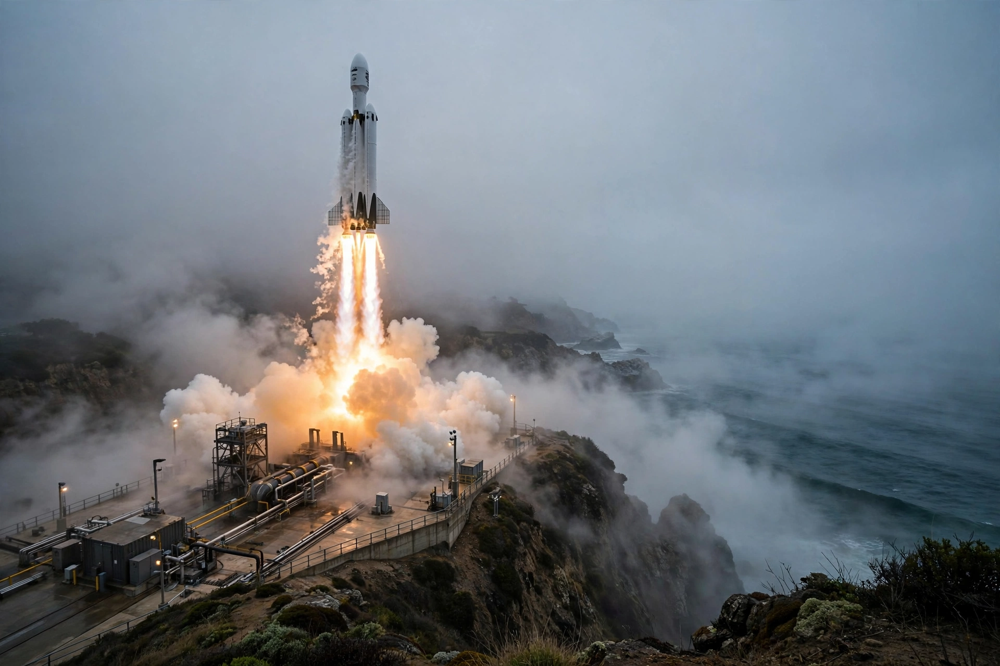

Vandenberg Space Force Base
From Wikipedia, the free encyclopedia
| Vandenberg Space Force Base | |
|---|---|
| Location | Santa Barbara County, California |
| Operator | United States Space Force |
| Established | 1941 (Camp Cooke); space launches from 1958 |
| Role | Polar-orbit launches; missile tests |

Polar launch from Vandenberg.Vandenberg Space Force Base is a United States Space Force installation on California's central coast, the American West Coast spaceport. Where Cape Canaveral launches eastward over the Atlantic into equatorial orbits, Vandenberg launches southward over the Pacific into polar and sun-synchronous orbits — the vantage for Earth-observation, weather and reconnaissance satellites, and in recent years a major SpaceX Falcon 9 base for Starlink and rideshare missions.
The base began as an Army camp and missile-training site; it hosted the first polar-orbit satellite launch (Discoverer 1, 1959) and decades of ICBM test flights down the Pacific range to Kwajalein. A planned West Coast Space Shuttle complex at SLC-6 was completed but never used for Shuttle after Challenger — the pad later served Delta IV and now Falcon rockets.
Setting
Vandenberg's fog-bound headlands ('Vandenberg fog' is notorious among launch photographers) and its protected coastline make it both a working missile range and an accidental nature reserve, threaded by Amtrak's coastal line whose passengers get launch views money cannot usually buy.